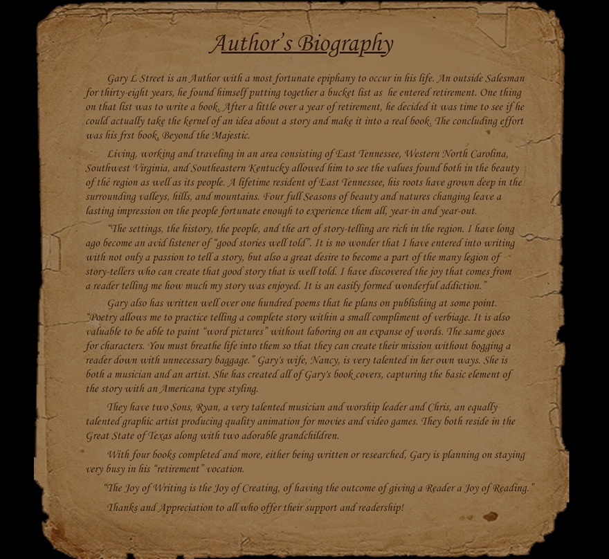
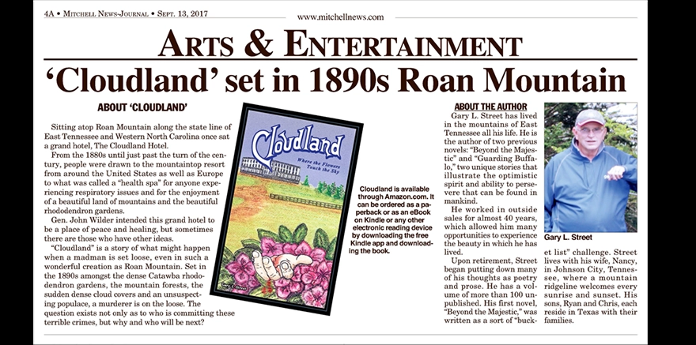

Matthew A. Davis, MBA
Operations & Corporate Development · Systems Design · Strategic Communications · Independent R&D

GaryStreetMedia.com · June 2018 — March 2020
Gary Street Media
I built and maintained this site for novelist Gary Street, who spent seven years teaching Sunday School to the same group of boys at Central Baptist Church in Johnson City, sixth grade through twelfth. I was one of them. He was my mentor.
After retiring from a career in sales, Gary started writing novels set in the places he knew by heart: Jonesborough, Roan Mountain, downtown Johnson City, and the mountains surrounding East Tennessee. I built the site in 2018 and maintained it through 2020 as he wrote and published new books. In total, he completed ten novels and a book of poetry. The site, however, only carried his first seven when it was last updated.
But the part screenshots can’t show is the timeline. Book one through book four arrived in June 2018. Book five arrived in October. Book six followed in May 2019. Book seven arrived on March 21, 2020. Each release meant a new cover treatment, new parchment panels, revised navigation, updated purchase links, and another round of maintenance.
Gary passed in August 2021.
This is not a site that was built. It’s a site that was kept.
One detail has been removed: the email address in the panel inviting readers to request a signed copy. It was a private address belonging to Gary, and it is not reproduced here. Nothing else on these screens has been altered.

